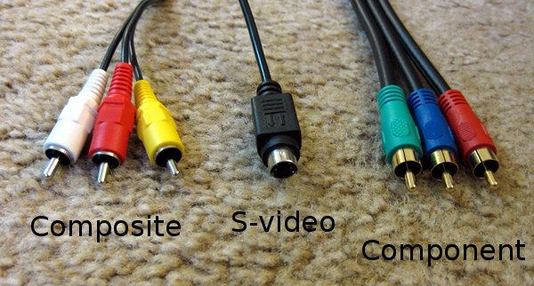

DisplayStation
What Do You Have?
The first step is understanding what options you have available to you. Before digital video, there were several video standards that all had their own quirks and features. These include:
- RF/Coaxial
- Composite
- S-Video
- Component
- RGB Scart
If your console is a Wii/XBOX 360/PS2 or older, you will have these cables instead of HDMI or DisplayPort.
Now, not all cables produce the same picture quality. There is a lot of math and science behind it, but all you need to know is that composite video (the single yellow cable with red/white audio) is the cheapest and produces a really blurry picture. It is the common denominator that almost all video devices used, since it is comparable to a standard tv signal. Your tv will have a yellow plug labeled "Composite" with a red and a white plug nearby for audio.
Odds are, your console has one of these cables straight out of the box. There may be a chance you have a component cable (red/green/blue cables with red/white audio) available. Those will produce a much clearer picture becuase there are 3 times as much bandwidth for the signal. The only problem is not all TVs (especially old CRTs) have this kind of plug available. Use it when available on both your console and TV, otherwise you might need to stick with composite.
The last common plug out there is S-Video. Picture quality wise it sits between composite and component video, while being more common than component. it is a round plug with 5 pins inside that was used by some video players and camcorders. If you have a 3rd party video cable it might have an S-Video cable, and use it if you are able. Modern TVs don't use S-Video at all anymore, so don't expect to be able to connect your console to your flat screen unless you are lucky enough to have a TV with S-Video input.
RGB Scart was a standard available in Japan and Europe, but was never used in the US. If you buy a console from one of those regions it might be that you have a scart output, but if your TV is made in the US and newer than 2002 than you will definately not have a scart input.

Shown above is an example of what a set of TV inputs look like. They are generally color coded, so just match the colors and you will be fine. Y/Pb/Pr is the official name for component cables, with Y being green, Pb being blue, and Pr being red. The TV pictured here has a Scart connector, featured on the far left.
Connecting the cables is simple, just plug the colored cables into the corresponding holes. Don't forget to change the TV's source to the appropriate input or else you won't get a picture even if it is plugged in correctly! At that point you are ready to start enjoying your older games again! If you are still experiencing issues with lag or want a better picture than composite has to offer, than check out the next page where we will discuss common issues.